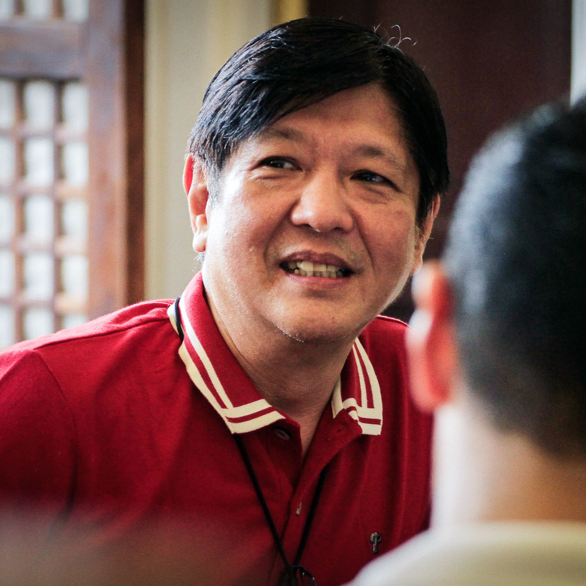

Bongbong Marcos
Ferdinand Romualdez Marcos Jr. | Former Senator
General Information
- Senator from 2010-2016
- Vice governor of Ilocos Norte in 1980, then became governor in 1983
- Family was ousted and fled to Hawaii in 1986, then returned in 1989
- Ran for vice president in 2016 but lost; now running for president in 2022 under Partido Federal ng Pilipinas (PFP)
History
- Enrolled in St. Edmund Hall for Politics, Philosophy, and Economics but failed; was instead given a special diploma in social studies
- Failed to complete Masters in Business Administration Program at Wharton School of the University of Pennsylvania, claiming it was due to his election as vice governor in Ilocos Norte
- Elected representative of the second district in Ilocos Norte to the Philippine House of Representatives in 1992-1995
- Ran for the senate in 1995 but lost
- Elected governor of Ilocos Norte in 1998-2007 for three terms
- Was deputy minority leader of House of Representatives in 2007
- Ran for vice president in 2016 but lost in a tight race against Leni Robredo
- Ran for 2022 presidential elections under PFP
Gallery